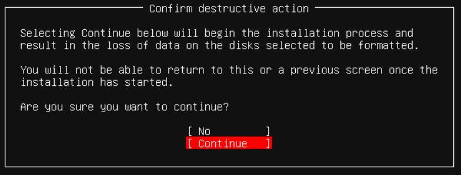
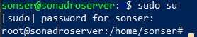
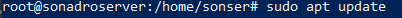

Sette opp server
Før man kan hoste noe på en webserver, så må man ha en webserver.


Velg ditt nettverk i menyen:

Pass på at connect at power on er på

Trykk på "Content Library ISO File"

Last opp ubuntu-20.04.3-live-server-amd64

Pass på at connect at power on også er skrudd på her


Innstallasjon av Ubuntu
Naviger til "Network boot from VMware VMXNET3
Trykk enter

Naviger til exit tab, naviger til Save Changes, og trykk enter
Trykk F10, og trykk save

Det anbefales å velge Engelsk språk første gang du setter opp webserveren, da det blir lettere å følge med.

Trykk edit ipv4
Velg manuell

Fyll ut din IP-adresse, trykk lagre

Trykk continue without updating
Sjekk at instillingene stemmer


Trykk continue, og confirm destructive action

Lag brukernavn og passord

Du trenger ikke å installere noe på Featured Server Snaps, bare trykk done
Laste ned og sette opp Apache:


Sette opp en template-fil for serveren
Vi skal sette opp en template-fil for serveren nå, slik at vi kan bytte de ut med våre egne filer senere

Kopier disse linjene med HTML-kode:
Laster tekst...
Når du har satt inn koden, trykk CTRL-O og så enter for å lagre. Trykk CTRL-X for å lukke filen.
Kopier denne koden, pass på å bytte "domene-navn" med ditt domene navn:
Laster tekst...
Trykk CTRL-O for å lagre, og trykk CTRL-X for å lukke filen.
Laste opp dine egne filer til serveren